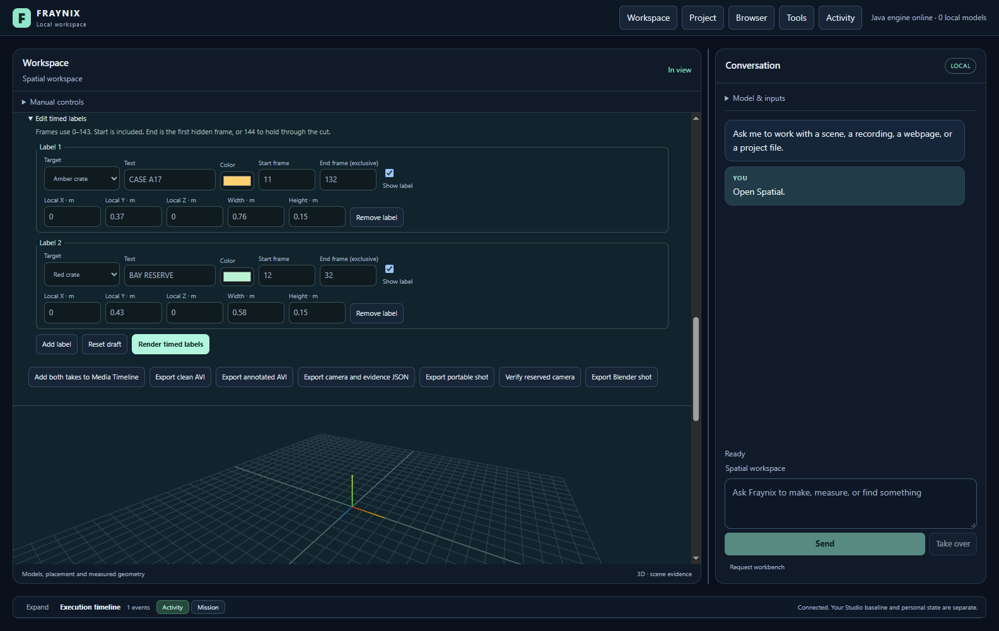
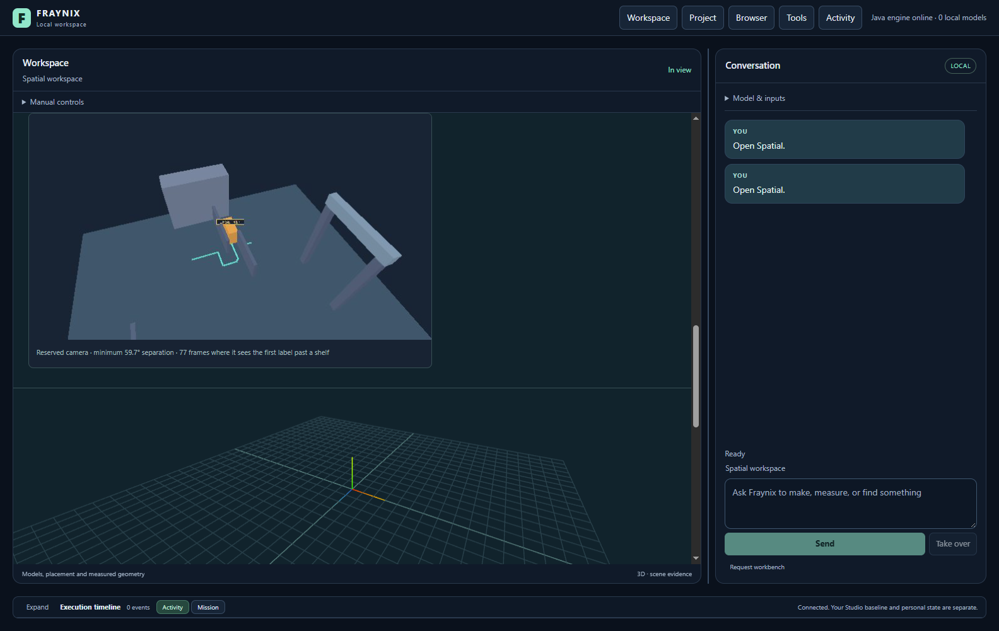
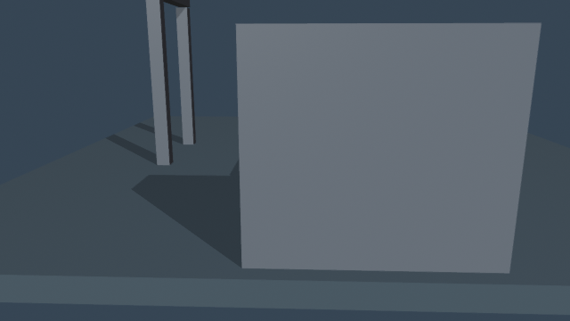
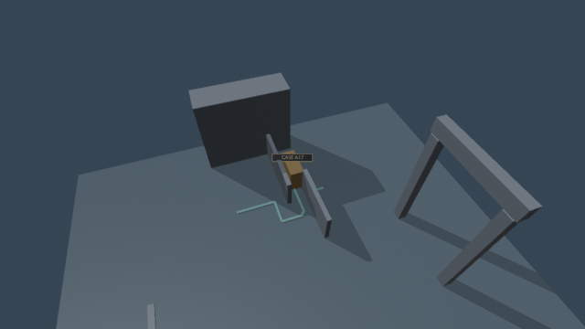

Replay timed 3D labels in Blender
Edit two timed labels, verify the reserved camera and compare both views in a reopened Blender project.

The recipient edits the two object labels and their frame ranges

Fraynix checks the reserved view of the dispatch bay

Blender primary camera at the shelf occlusion

Blender reserved camera at the same frame
System files
Open source